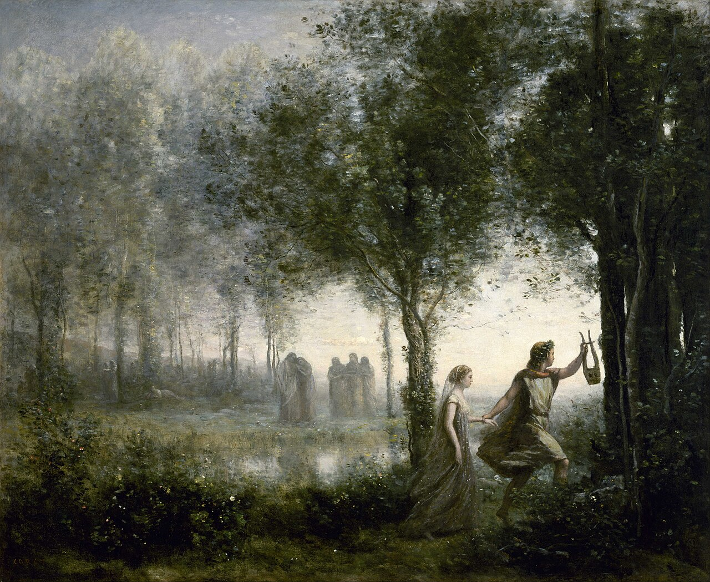

Museum of Fine Arts, Houston. Public domain.
Minutes Myth
Real Greek myths, told the way the ancient poets told them, in under a minute.
Watch on YouTubeHow the videos are made
Each story follows its ancient sources, such as Ovid and Virgil, and is split into short parts. Every part is narrated, captioned, and illustrated with public-domain paintings from museum collections. The source and every painting are credited in the video's description.
Minutes Myth uploader
The channel uses a small private tool, the Minutes Myth uploader, to upload its own finished videos to its own YouTube account and add them to playlists. Only the channel owner uses it. Read how it handles data in the privacy policy.